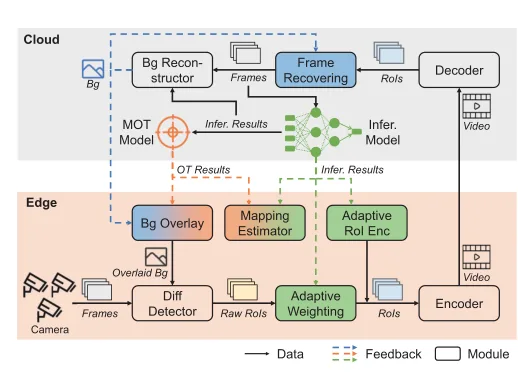
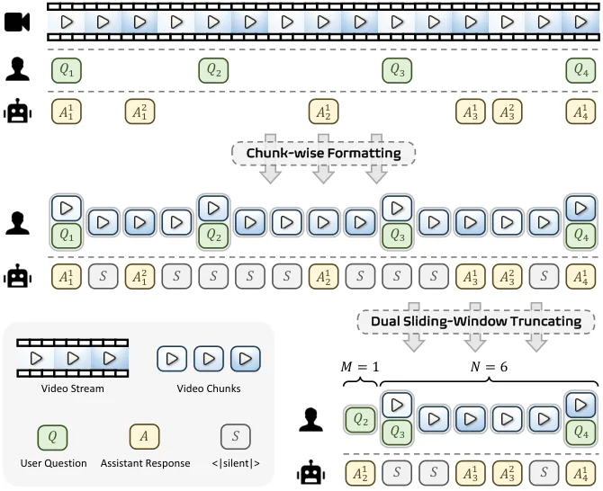
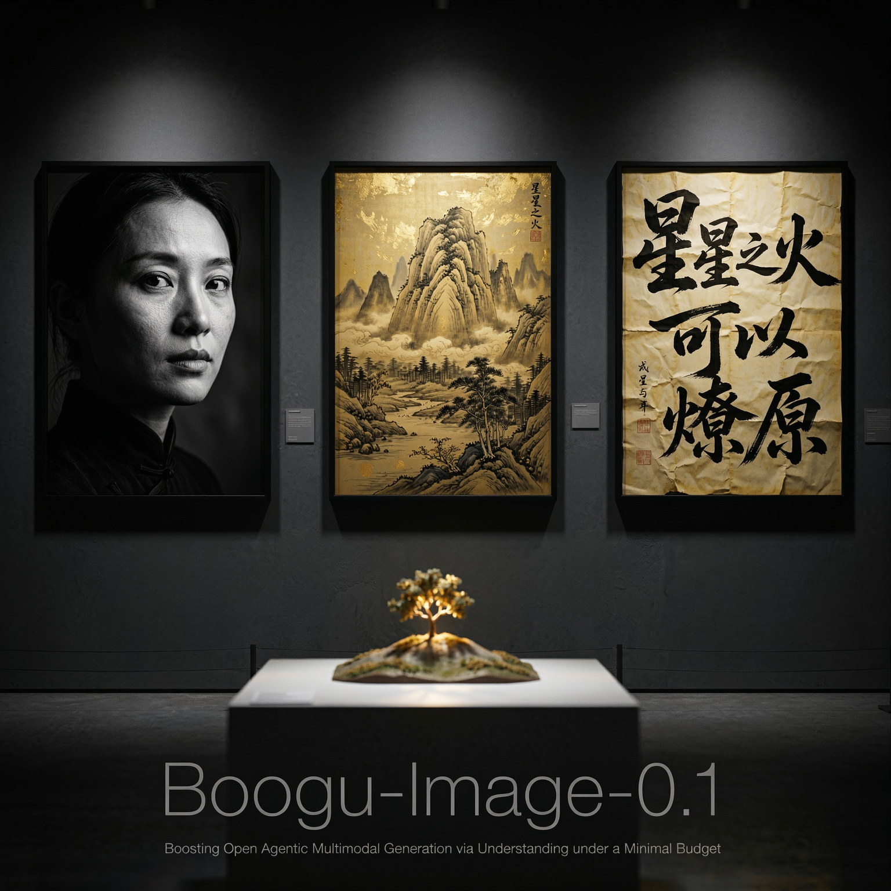
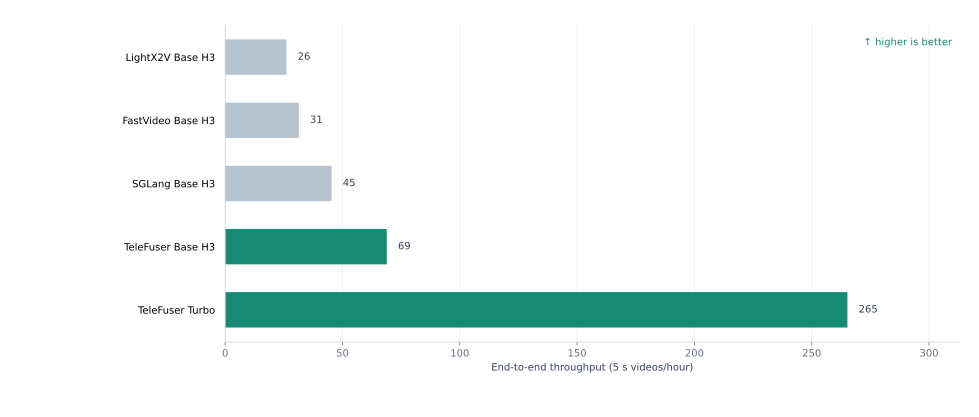

The Hong Kong University of Science and Technology
MPhil in Computer Science and Engineering
Research field: Generative AI (LLM, MLLM, Diffusion). GPA: 4.15/4.3.
Aug 2025 - Jun 2027 · Hong Kong
I work on efficient generative AI systems towards LLM, Diffusion and Multi-modal models.
I am an MPhil student in Computer Science and Engineering at the Hong Kong University of Science and Technology, advised by Prof. Wei Wang.
MPhil in Computer Science and Engineering
Research field: Generative AI (LLM, MLLM, Diffusion). GPA: 4.15/4.3.
Aug 2025 - Jun 2027 · Hong Kong
School of Computer Science and Engineering
Bachelor in Software Engineering. Rank: 2/87. Average: 92.59/100. GPA: 3.94/4.
Aug 2018 - Jun 2022 · Nanjing, China
Selected research on real-time video intelligence, streaming multimodal systems, and efficient generative models.

Journal article · 2023
IEEE Journal on Selected Areas in Communications, 41(1), 90-106. Second student author.
VaBUS uses background understanding to keep contextual video information on the edge and transmit only high-confidence regions of interest to the cloud. It reduces bandwidth consumption by 25.0%–76.9% while maintaining 90.7% accuracy on object detection and human keypoint detection.

CoRR / arXiv · 2026
arXiv:2604.04184. Coauthor.
AURA is an end-to-end streaming visual-interaction framework for continuous VideoLLM processing, real-time question answering, and proactive responses. It combines context management, data construction, training objectives, and deployment optimization for stable long-horizon streaming interaction.

CoRR / arXiv · 2026
arXiv:2607.13125. Coauthor.
An open unified multimodal model family for text-to-image generation, fast inference, instruction-based editing, and bilingual rendering. The work shows how stronger understanding, agentic prompt rewriting, and inference-time scaling can improve generation under a constrained compute budget.


AI Frameworks Engineer (Full-time Employee, 3 Years)
Aug 2022 - Jul 2025 · Shanghai, China
Celia AI Lab
Research Intern
Oct 2025 - Jun 2026 · Hong Kong
Foundation Platform
Research Intern
Sep 2025 - Present · Remote
Deep Learning Engineer Intern
Sep 2021 - Jul 2022 · Shanghai, China
COMP 2012 · Spring 2026
COMP3511 Operating Systems · Fall 2026
IEEE INFOCOM 2025
IEEE ICNP 2026
President Scholarship, Southeast University
Top 1% and the highest honor in Southeast University. 2021
Outstanding Graduate of Southeast University
Top 5% in SEU. 2022
1st Prize, National College Mathematical Contest of China
Top 7% nationwide. 2019
1st Prize, Advanced Mathematical Contest of Jiangsu Province, China
Top 5% in Jiangsu Province. 2019